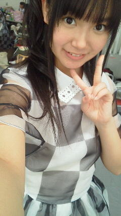
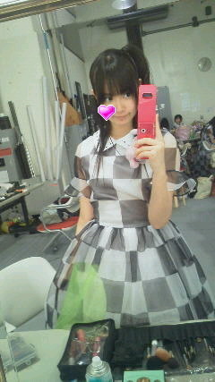

| 2012/04 17 Tue | ひめたん(* ゝω・*)ノ その132 |
日曜の撮影報告(^^)/
全員で撮影してまいりました!
この写真はねー、いつもより髪のカール具合がメルヘンだったの(*^^*)
ひめたんの
おいシャー
ドレス初披露☆

ねー?
メルヘンっしょー(ω)?
そうなのメルヘンなの。
ごめん写真じゃ伝わらんよね。んー...
でねー、あのお馴染み
乃木坂中3組
で高校生活が楽しい話したりねー
高校生活が楽しい話したりねー高校生活が楽しい話したりしたのー。
制服こんななのーって写真見せてみたり(^^)
いくちゃん
(生田絵梨花chan)も
るんるん
(斎藤ちはるchan)も
お友達できたって。楽しいって。2人の代わりにひめたんが報告しちゃう☆
撮影の順番待ってる時に、少女時代さんの「GENIE」が流れてきたのよ。
だから、ひめたんと
あみあみ
(能條愛未chan)とで踊ったの(*^^*)
それから
ゆっきーな
(柏幸奈chan)に「ももいろパンチ」に続いて今度は
「未来ヘススメ」も教えてもらった(*^^*)
要は、踊りたかったってことですよ。昨日は無性に踊りたくなった日。
ねーまりか?
そだ。
「真洋もペットでええから仲間に入れて〜ω」ってことで
新!ひめたん的乃木坂ふぁみりー選抜!
ぱぱ→
かずみん
(高山一実chan)
まま→
まいまい
(深川麻衣chan)
長女→
みさみさ
(衛藤美彩chan)
次女→
みゅみゅ
(若月佑美chan)
三女→
まりか
(伊藤万理華chan)
末っ子
ひめたん
ペット→
ろってぃ
(川村真洋chan)
「ペット→ろってぃ」って書くの抵抗があるんだけれども
本人の希望だからよしとして下さい(・∀・)
ろってぃファンのみなさーんごめんなさーいっ

 あみみのモノマネって前にミタパンブーでやってたやつだよね!
あみみのモノマネって前にミタパンブーでやってたやつだよね!
大阪の個握でリクエストしていい?
んー正確に言うとね、
あみあみ
(能條愛未chan)が
ひめたんの物真似をするんだけどね(ω)♪
この前の撮影の時は「ひめたんの物真似をするあみあみの物真似」をしたの。
それ今度やりましょか(^^)??
1日だけ他のアイドルになれるとしたらどこのグループになってみたい
ももクロZさん!
脳震盪起こすくらいに踊り狂ってみたい!!!
同い年な人ってどう??ww
勝手に親近感(*^^*)ふふふ
次の個別でやってみたい髪型とかある?
どうしよかなー(ω)考えてなかった。いっつもその日の気分だからなー。
何かリクエストありますかー??
 休みの日は何してるの?
休みの日は何してるの?
お散歩、読書、ぶろぐの質問まとめ、こんなかんじですかね(∀)☆
最近観たい映画あるのかな?
最近ゆーか前からずっとなんだけど、
ひめたん3Dメガネかける映画見たことないんよ!
時代に置いてかれるーいややぁ(ノω;`)
 ファンレ出したいんだけど、特別に書き足して欲しいこととかあるかな??
ファンレ出したいんだけど、特別に書き足して欲しいこととかあるかな??
 まだ握手したことないけどお手紙書いてもいい?
まだ握手したことないけどお手紙書いてもいい?
お手紙好きよ＼(^O^)／
中身はおまかせいたしますよ♪♪
中身?お弁当みたいなニュアンスね。
ちゃんと読むけーね。
今度いつ会社行くかわからんけちょっと時間かかるかもだけどちゃんと読むけ。
ありがとーう!!!
 まだ1回もイベント参加できてないけど、ひめきゅん続けてもいい?
東京くらいしか握手行けないけどいい?←
ワシみたいなじいさんが握手会に来ても嬉しいですか?
まだ1回もイベント参加できてないけど、ひめきゅん続けてもいい?
東京くらいしか握手行けないけどいい?←
ワシみたいなじいさんが握手会に来ても嬉しいですか?
 2ndから、ひめたんのところ行っても許してくれる?
2ndから、ひめたんのところ行っても許してくれる?
 根っからのDD体質です。
根っからのDD体質です。
こんな俺でもひめたんのブログに今後もコメントしていいかな?
複数推しだけど、2推しでもいい?
こゆ質問、たくさんの方からいただきます。
許可なんかいらないよー(>_<)
ひめたんは応援してくれるだけで嬉しいのよー!
いつもありがとうございます。大好きよ(*^^*)

では最後に今日の日記。
50メートル走しました。
だいぶ運動してなかったから筋肉痛なるかなって思ってたんだけど
まさかの骨が痛い(>_<)
なにゆえー。
骨とか。ほんとによくわからんけど骨が痛い。骨...。
テラスでお弁当食べました。
テラスからは山も川も見えないなんて。さすが都会ですね。ん。
風が気持ち良かったよ。やっぱり春好きだわよっ∪・ω・∪☆
「ひめたんピンクのパジャマみたい!」って書いてくださった方ー?
その130のツインテのひめたんが
まっぴんく
のパジャマ着てるからね♪♪
(*´・ω・*)ひめたん
コメント(94)
2012/04/17 23:48